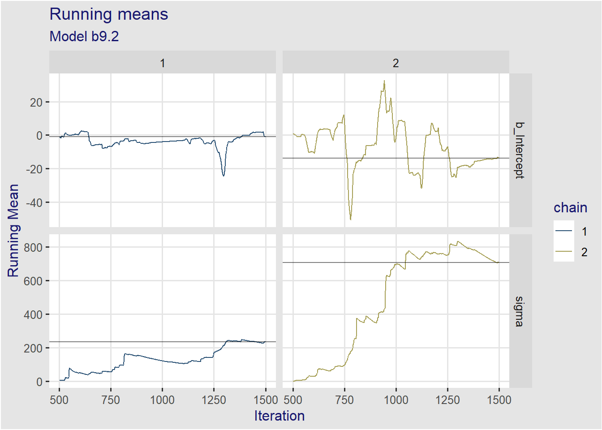
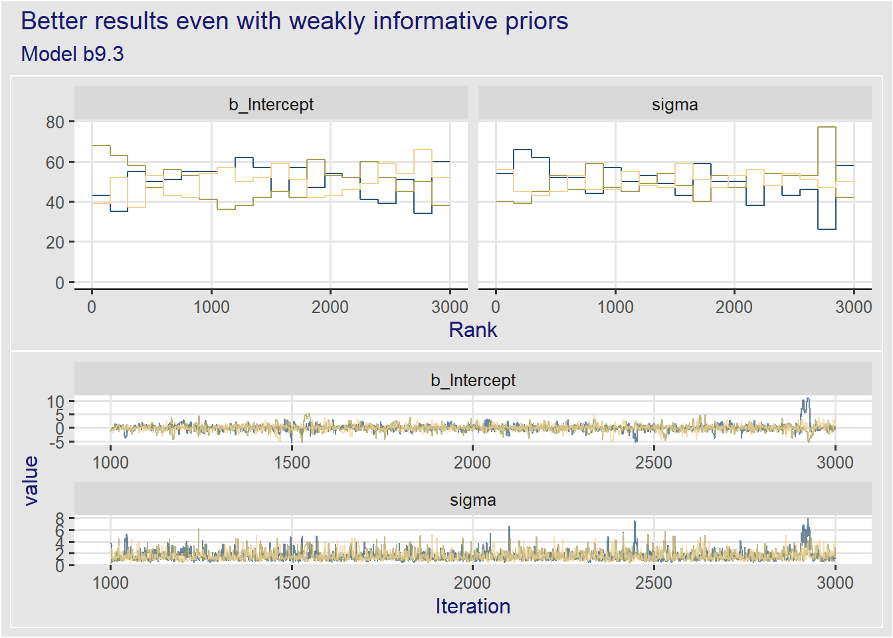
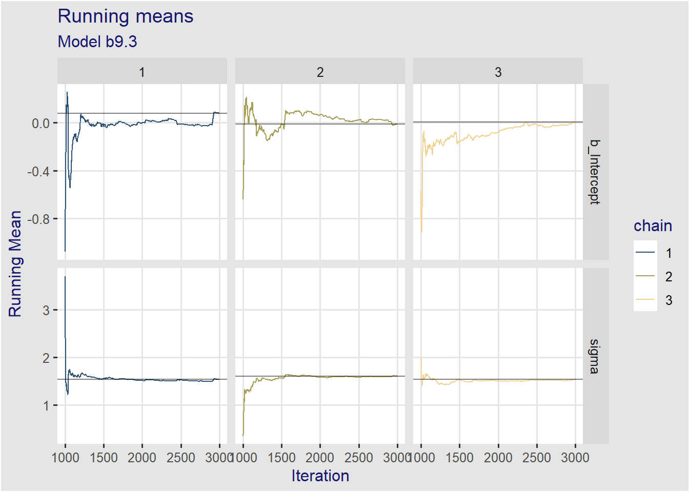
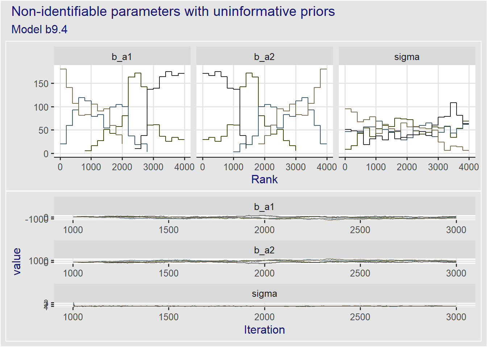
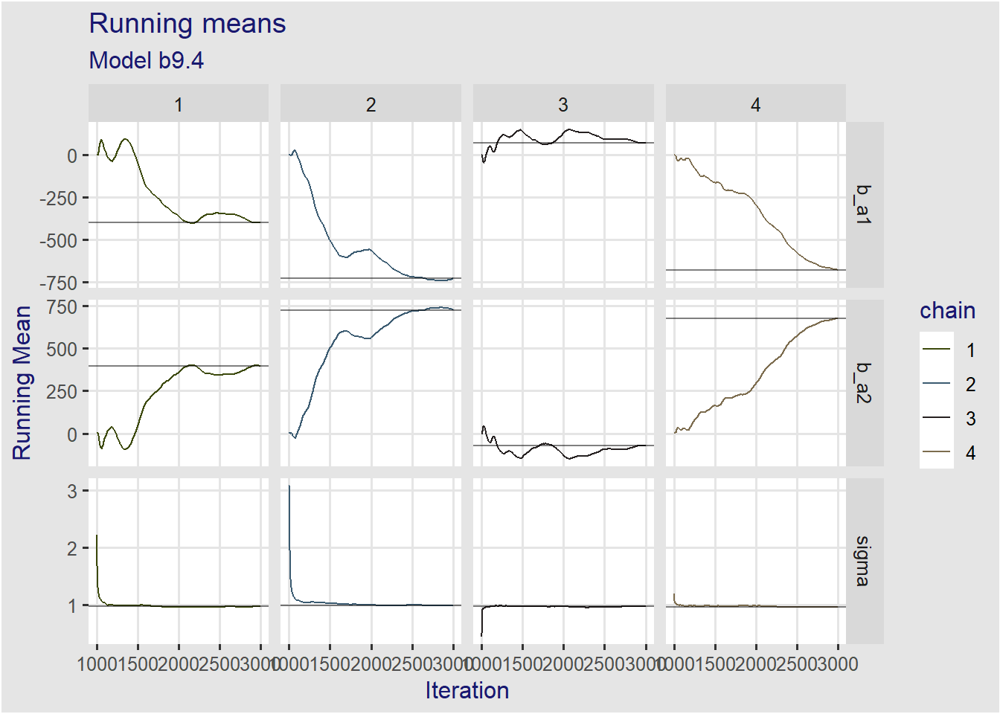
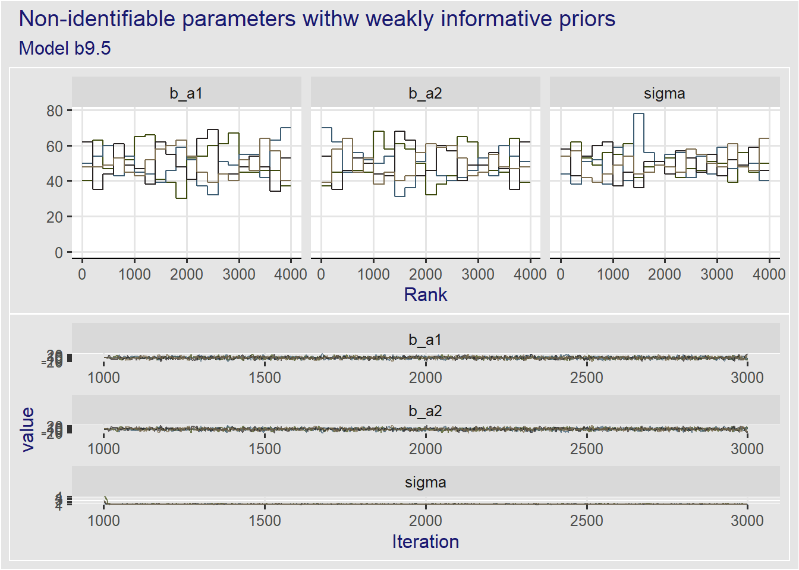

# For execution on a local, multicore CPU with excess RAM
options(mc.cores = parallel::detectCores())
# To avoid recompilation of unchanged Stan programs
rstan_options(auto_write = TRUE)9 Markov Chain Monte Carlo
Some options to facilitate the computations
The default theme used by ggplot2
# The default theme used by ggplot2
ggplot2::theme_set(ggthemes::theme_igray())
ggplot2::theme_update(title = element_text(color = "midnightblue"))9.1 Good King Markov
We define the algorithm to simulate the King’s journey.
plotKingMarkov <- list()
plotKingMarkov <- within(plotKingMarkov, {
positions <- integer(1e4)
current <- 10
for (i in seq_len(length(positions))) {
# Step 0: record current position
positions[i] <- current
# step 1: flip a coin
set.seed(9 * i)
coin <- sample(x = c(-1, 1), size = 1)
# step 2: nominate the proposal island
# we use modulo arithmetic to simulate a clock
# constant 1 substracted and added to obtain 10 instead of 0
proposal <- (positions[i] + coin - 1) %% 10 + 1
# step 3: count shells and stones
# count of shells = proposal, count of stone = current
# step 4: prob of moving
prob_move <- proposal / positions[i]
current <- ifelse(runif(1) < prob_move, proposal, current)
}
# the itinerary dataframe
itinerary <- data.frame(
week = seq_along(positions),
island = factor(positions, levels = 1:10, ordered = TRUE))
set.seed(907)
dp <- itinerary |>
arrange(week) |>
slice_head(n = 250)
p1 <- ggplot(data = dp, aes(x = week, y = island)) +
geom_point(aes(color = island), size = 1) +
scale_color_paletteer_d(palette = "ggsci::category10_d3") +
theme(legend.position = "none") +
labs(subtitle = sprintf("Itinerary for the first %d weeks", nrow(dp)),
x = "week #", y = "island")
p2 <- ggplot(data = itinerary, aes(x = island)) +
geom_bar(aes(fill = island), stat = "count") +
scale_fill_paletteer_d(palette = "ggsci::category10_d3") +
theme(legend.position = "none") +
labs(subtitle = sprintf("%d weeks", nrow(itinerary)),
x = "island", y = "nb of weeks")
})
wrap_plots(plotKingMarkov[c("p1", "p2")]) +
plot_annotation(title = "Figure 9.2", subtitle = "Metropolis algorithm")9.2 Metropolis algorithms
9.2.1 Gibbs sampling
It is a variant of the Metropolis-Hasting algorithm that is more efficient and uses pairs of conjugate prior and likelihood distributions.
It is the basis for the sofware BUGS (Bayesian inference using Gibbs Sampling) and JAGS (Just Another Gibbs Sampler)
9.2.2 High-dimensional problems
The code for this section comes straight from the same section in Kurz (2020). Many thanks to Solomon Kurtz for this wonderful gift.
The core issue with high-demensional problems is that parameters will end up having high-correlations which causes the algorithm to get stuck.
McElreath explains it by fire explaining the problem of high correlations itself then how high-dimensionality leads unavoidably to high corrrelations.
9.2.2.1 The problem of high correlations
To illustrate a bivariate distribution with strong negative autocorrelation of -0.9 is used
\[ \begin{align*} \begin{bmatrix} a_1 \\ a_2 \end{bmatrix} &\sim \mathcal{MVNormal}( \begin{bmatrix} 0 \\ 0 \end{bmatrix}, \Sigma ) \\ \Sigma &= \mathbf{SRS} \\ \mathbf{S} &= \begin{bmatrix} 0.22 & 0 \\ 0 & 0.22 \end{bmatrix} \\ \mathbf{R} &= \begin{bmatrix} 1 & -0.9 \\ -0.9 & 1 \end{bmatrix} \end{align*} \]
we create the contour of \(x\) and \(y\) values and their bivariate density. See https://stackoverflow.com/questions/36221596/plot-multivariate-gaussian-contours-with-ggplot2 for reference.
simMetropolis <- list()
simMetropolis <- within(simMetropolis, {
# Create the Multivariate distribution matrix
mu <- c(0, 0)
sd_a1 <- 0.22
sd_a2 <- 0.22
rho <- -0.9
S <- matrix(c(sd_a1, 0, 0, sd_a2), nrow = 2, byrow = TRUE)
R <- matrix(c(1, rho, rho, 1), nrow = 2, byrow = TRUE)
Sigma <- S %*% R %*% S
domain <- data.frame(
x = seq(from = -1.6, to = 1.6, length.out = 200),
y = seq(from = -1.6, to = 1.6, length.out = 200)) |>
tidyr::expand(x, y)
df <- domain |>
mutate(prob = mvtnorm::dmvnorm(x = as.matrix(domain), mean = mu, sigma = Sigma))
})
# simMetropolis$dfthen create the basic contour map
plotMetropolis <- list()
plotMetropolis <- within(plotMetropolis, {
contour <- ggplot(simMetropolis$df, aes(x = x, y = y, z = prob)) +
geom_contour(aes(color = after_stat(level)), breaks = 9^(-(10 * 1:25))) +
scale_color_paletteer_c("grDevices::Emrld", direction = -1)
})
# plotMetropolis$contourDefine a function to implement the Metropolis algorithm. This is a copy from the same section in kurtz2020b.
funMetropolis <- function(mu, Sigma, num_proposals,
step_size,
starting_point) {
# Initialize vectors where we will keep track of relevant
candidate_x_history <- rep(-Inf, num_proposals)
candidate_y_history <- rep(-Inf, num_proposals)
did_move_history <- rep(FALSE, num_proposals)
# Prepare to begin the algorithm...
current_point <- starting_point
for(i in 1:num_proposals) {
# "Proposals are generated by adding random Gaussian noise
# to each parameter"
noise <- rnorm(n = 2, mean = 0, sd = step_size)
candidate_point <- current_point + noise
# store coordinates of the proposal point
candidate_x_history[i] <- candidate_point[1]
candidate_y_history[i] <- candidate_point[2]
# evaluate the density of our posterior at the proposal point
candidate_prob <- mvtnorm::dmvnorm(candidate_point, mean = mu, sigma = Sigma)
# evaluate the density of our posterior at the current point
current_prob <- mvtnorm::dmvnorm(current_point, mean = mu, sigma = Sigma)
# Decide whether or not we should move to the candidate point
acceptance_ratio <- candidate_prob / current_prob
should_move <- ifelse(runif(n = 1) < acceptance_ratio, TRUE, FALSE)
# Keep track of the decision
did_move_history[i] <- should_move
# Move if necessary
if(should_move) {
current_point <- candidate_point
}
}
# once the loop is complete, store the relevant results in a tibble
results <- tibble::tibble(
candidate_x = candidate_x_history,
candidate_y = candidate_y_history,
accept = did_move_history
)
# compute the "acceptance rate" by dividing the total number of "moves"
# by the total number of proposals
number_of_moves <- results %>% dplyr::pull(accept) %>% sum(.)
acceptance_rate <- number_of_moves/num_proposals
return(list(results = results, acceptance_rate = acceptance_rate))
}and run the algorithm with step size = 0.1
simMetropolis <- within(simMetropolis, {
set.seed(9)
round_1 <- funMetropolis(mu = mu, Sigma = Sigma, num_proposals = 50,
step_size = 0.1,
starting_point = c(-1,1))
})
# glimpse(simMetropolis$round_1)plotMetropolis <- within(plotMetropolis, {
p1 <- contour +
geom_point(data = simMetropolis$round_1$results,
aes(x = candidate_x, y = candidate_y, shape = accept,
fill = accept),
inherit.aes = FALSE) +
scale_shape_manual(values = c(21, 21)) +
scale_fill_manual(values = c("FALSE" = "red", "TRUE" = "green")) +
theme(legend.position = "none") +
labs(title = "Round # 1",
subtitle = paste("step size 0.1, accept rate",
simMetropolis$round_1$acceptance_rate),
x = "a1",
y = "a2")
})
# plotMetropolis$p1and for round # 2
simMetropolis <- within(simMetropolis, {
set.seed(9)
round_2 <- funMetropolis(mu = mu, Sigma = Sigma, num_proposals = 50,
step_size = 0.25,
starting_point = c(-1,1))
})
# glimpse(simMetropolis$round_2)plotMetropolis <- within(plotMetropolis, {
p2 <- contour +
geom_point(data = simMetropolis$round_2$results,
aes(x = candidate_x, y = candidate_y, shape = accept,
fill = accept),
inherit.aes = FALSE) +
scale_shape_manual(values = c(21, 21)) +
scale_fill_manual(values = c("FALSE" = "red", "TRUE" = "green")) +
theme(legend.position = "none") +
labs(title = "Round # 2",
subtitle = paste("step size 0.25, accept rate",
simMetropolis$round_2$acceptance_rate),
x = "a1",
y = "a2")
})
# plotMetropolis$p2wrap_plots(plotMetropolis[c("p1", "p2")]) +
plot_annotation("Metropolis chain under high correlation")9.2.2.2 Concentration of measure
To do on a rainy day
9.3 Hamiltonian Monte Carlo
To do. Not critical to do the rest of the book.
9.4 Easy HMC: ulam with brms::brm()
Same data as in chapter 8.
data(rugged)
dataRugged <- rugged %>%
filter(complete.cases(rgdppc_2000)) %>%
mutate(log_gdp = log(rgdppc_2000),
is_africa = if_else(cont_africa == 1, "Africa", "Not Africa"),
is_africa = as.factor(is_africa))
rm(rugged)
dataRugged_nona <- dataRugged %>%
drop_na(rgdppc_2000) %>%
mutate(log_gdp_s = log_gdp / mean(log_gdp),
rugged_s = scales::rescale(rugged),
# rugged_s = rugged / max(rugged),
rugged_sc = as.vector(scale(rugged_s, center = TRUE, scale = FALSE)))
dataRugged_nona |>
select(is_africa, rgdppc_2000, log_gdp, log_gdp_s, rugged, rugged_s, rugged_sc) |>
skim() |>
mutate(across(.cols=where(is.numeric), .fns = round, digits = 2))| Name | select(…) |
| Number of rows | 170 |
| Number of columns | 7 |
| _______________________ | |
| Column type frequency: | |
| factor | 1 |
| numeric | 6 |
| ________________________ | |
| Group variables | None |
Variable type: factor
| skim_variable | n_missing | complete_rate | ordered | n_unique | top_counts |
|---|---|---|---|---|---|
| is_africa | 0 | 1 | FALSE | 2 | Not: 121, Afr: 49 |
Variable type: numeric
| skim_variable | n_missing | complete_rate | mean | sd | p0 | p25 | p50 | p75 | p100 | hist |
|---|---|---|---|---|---|---|---|---|---|---|
| rgdppc_2000 | 0 | 1 | 9094.89 | 9699.99 | 466.65 | 1880.83 | 5314.74 | 13100.15 | 57792.09 | ▇▂▂▁▁ |
| log_gdp | 0 | 1 | 8.52 | 1.17 | 6.15 | 7.54 | 8.58 | 9.48 | 10.96 | ▃▆▇▆▃ |
| log_gdp_s | 0 | 1 | 1.00 | 0.14 | 0.72 | 0.89 | 1.01 | 1.11 | 1.29 | ▃▆▇▆▃ |
| rugged | 0 | 1 | 1.33 | 1.17 | 0.00 | 0.44 | 0.98 | 1.96 | 6.20 | ▇▅▁▁▁ |
| rugged_s | 0 | 1 | 0.21 | 0.19 | 0.00 | 0.07 | 0.16 | 0.32 | 1.00 | ▇▅▁▁▁ |
| rugged_sc | 0 | 1 | 0.00 | 0.19 | -0.21 | -0.14 | -0.06 | 0.10 | 0.79 | ▇▅▁▁▁ |
9.4.1 Preparation
# dat_slim <- dataRugged_nona %>%
# select(log_gdp_s, rugged_s, rugged_sc, cid) %>%
# list()
# str(dat_slim)9.4.2 Sampling from the posterior
This is easy with tidybayes. The model is
\[
\begin{align*}
log\_gdp\_s_i &\sim \mathcal{N}(\mu_i, \sigma) \\
\mu &= \alpha_{cid[i]} + \beta_{cid[i]} \cdot rugged\_sc \\
\alpha_{cid[i]} &\sim \mathcal{N}(1, 0.1) \\
\beta_{cid[i]} &\sim \mathcal{N}(1, 0.3) \\
\sigma &\sim \mathcal{Exp}(1)
\end{align*}
\] As usual, we look at the default priors to have a starting point on how to write our prior with brms.
get_prior(data = dataRugged_nona,
formula = log_gdp_s ~ 0 + (1 + rugged_sc|is_africa),
family = gaussian) prior class coef group resp dpar nlpar lb ub
lkj(1) cor
lkj(1) cor is_africa
student_t(3, 0, 2.5) sd 0
student_t(3, 0, 2.5) sd is_africa 0
student_t(3, 0, 2.5) sd Intercept is_africa 0
student_t(3, 0, 2.5) sd rugged_sc is_africa 0
student_t(3, 0, 2.5) sigma 0
source
default
(vectorized)
default
(vectorized)
(vectorized)
(vectorized)
defaulttictoc::tic(msg = sprintf("run time of %s, use the cache.", "67 secs."))
fit09_01a <- xfun::cache_rds({
# sampling with 1 core only
brms::brm(
data = dataRugged_nona,
family = gaussian,
formula = bf(log_gdp_s ~ 0 + (1 + rugged_sc | is_africa)),
prior = c(prior(normal(0.5, 0.5), class = sd, coef = Intercept, group = is_africa),
prior(normal(0, 0.5), class = sd, coef = rugged_sc, group = is_africa),
prior(exponential(1), class = sigma)),
iter = 1000, warmup = 500, chains = 4, cores = 1, seed = 911)},
file = "ch09_fit09_01a")
tictoc::toc()run time of 67 secs., use the cache.: 0.08 sec elapsedprint(fit09_01a)Warning: There were 3 divergent transitions after warmup. Increasing adapt_delta
above 0.8 may help. See http://mc-stan.org/misc/warnings.html#divergent-
transitions-after-warmup Family: gaussian
Links: mu = identity; sigma = identity
Formula: log_gdp_s ~ 0 + (1 + rugged_sc | is_africa)
Data: dataRugged_nona (Number of observations: 170)
Draws: 4 chains, each with iter = 1000; warmup = 500; thin = 1;
total post-warmup draws = 2000
Group-Level Effects:
~is_africa (Number of levels: 2)
Estimate Est.Error l-95% CI u-95% CI Rhat Bulk_ESS
sd(Intercept) 0.95 0.29 0.49 1.62 1.01 536
sd(rugged_sc) 0.24 0.17 0.04 0.70 1.00 439
cor(Intercept,rugged_sc) -0.07 0.42 -0.79 0.73 1.00 858
Tail_ESS
sd(Intercept) 831
sd(rugged_sc) 494
cor(Intercept,rugged_sc) 1002
Family Specific Parameters:
Estimate Est.Error l-95% CI u-95% CI Rhat Bulk_ESS Tail_ESS
sigma 0.11 0.01 0.10 0.13 1.01 1312 1113
Draws were sampled using sampling(NUTS). For each parameter, Bulk_ESS
and Tail_ESS are effective sample size measures, and Rhat is the potential
scale reduction factor on split chains (at convergence, Rhat = 1).Note that we use mean_hdi() but there are many more of these functions in ggdist() (which are actually carried forward in tidybayes).
post09_01a <- gather_draws(fit09_01a, r_is_africa[is_africa, term]) |>
ggdist::mean_hdi(.width = 0.89) |>
identity()Warning: `gather_()` was deprecated in tidyr 1.2.0.
ℹ Please use `gather()` instead.
ℹ The deprecated feature was likely used in the tidybayes package.
Please report the issue at <https://github.com/mjskay/tidybayes/issues/new>.post09_01a# A tibble: 4 × 9
is_africa term .variable .value .lower .upper .width .point .inter…¹
<chr> <chr> <chr> <dbl> <dbl> <dbl> <dbl> <chr> <chr>
1 Africa Intercept r_is_africa 0.882 0.855 0.906 0.89 mean hdi
2 Africa rugged_sc r_is_africa 0.102 -0.0204 0.222 0.89 mean hdi
3 Not.Africa Intercept r_is_africa 1.05 1.03 1.07 0.89 mean hdi
4 Not.Africa rugged_sc r_is_africa -0.126 -0.218 -0.0306 0.89 mean hdi
# … with abbreviated variable name ¹.interval9.4.3 Sampling again, in parallel
tictoc::tic(msg = sprintf("run time of %s, use the cache.", "20 secs."))
fit09_01b <- xfun::cache_rds({
update(fit09_01a, iter = 1000, warmup = 500, chains = 4, cores = 4, seed = 911)},
file = "ch09_fit09_01b")
tictoc::toc()run time of 20 secs., use the cache.: 0.12 sec elapsedand we can see that the result are pretty close to mcElreath”s
grepl("^r_is_africa.+", x = rownames(posterior_summary(fit09_01b))) [1] FALSE FALSE FALSE FALSE TRUE TRUE TRUE TRUE FALSE FALSErownames(posterior_summary(fit09_01b)) [1] "sd_is_africa__Intercept" "sd_is_africa__rugged_sc"
[3] "cor_is_africa__Intercept__rugged_sc" "sigma"
[5] "r_is_africa[Africa,Intercept]" "r_is_africa[Not.Africa,Intercept]"
[7] "r_is_africa[Africa,rugged_sc]" "r_is_africa[Not.Africa,rugged_sc]"
[9] "lprior" "lp__" posterior_summary(fit09_01b) |>
as.data.frame() |>
tibble::rownames_to_column() |>
filter(grepl("^r_is_.+|^sd_is_.+", x = rownames(posterior_summary(fit09_01b)))) |>
mutate(across(.cols = where(is.numeric), .fns = round, digits = 3)) rowname Estimate Est.Error Q2.5 Q97.5
1 sd_is_africa__Intercept 0.951 0.290 0.489 1.616
2 sd_is_africa__rugged_sc 0.243 0.174 0.042 0.703
3 r_is_africa[Africa,Intercept] 0.882 0.016 0.848 0.913
4 r_is_africa[Not.Africa,Intercept] 1.051 0.010 1.031 1.071
5 r_is_africa[Africa,rugged_sc] 0.102 0.078 -0.043 0.256
6 r_is_africa[Not.Africa,rugged_sc] -0.126 0.060 -0.244 -0.008and we can see the formula
fit09_01b$formulalog_gdp_s ~ 0 + (1 + rugged_sc | is_africa) # and we can deparse it when plotting
deparse1(fit09_01b$formula$formula)[1] "log_gdp_s ~ 0 + (1 + rugged_sc | is_africa)"and obtain information on the model priors
prior_summary(fit09_01b) prior class coef group resp dpar nlpar lb ub
lkj_corr_cholesky(1) L
lkj_corr_cholesky(1) L is_africa
student_t(3, 0, 2.5) sd 0
student_t(3, 0, 2.5) sd is_africa 0
normal(0.5, 0.5) sd Intercept is_africa 0
normal(0, 0.5) sd rugged_sc is_africa 0
exponential(1) sigma 0
source
default
(vectorized)
default
(vectorized)
user
user
user9.4.4 Visualization
We use GGally. It can also be done using the ggmcmc package with ggs_pairs. The bayesplot package also has many different plots. It is more sophisticated than ggmcmc with some vignettes explaining how to diagnose the chains.
For this we choose to used ggmcmc which has trank plot and provides the warmup.
Also note that Solomon Kurtz Kurz (2020) has a lot more options and recipes about all of these plots. It is worthwhile reading before losing time finding solutions on the web.
post09_01b <- fit09_01b |>
spread_draws(r_is_africa[is_africa, term]) |>
unite(col = "param", is_africa, term) |>
pivot_wider(names_from = param, values_from = r_is_africa) |>
identity()
# glimpse(post09_01b)plot09_01b <- list()
plot09_01b <- within(plot09_01b, {
cols <- c("Africa_Intercept", "Africa_rugged_sc", "Not.Africa_Intercept", "Not.Africa_rugged_sc")
pairs <- post09_01b |>
GGally::ggpairs(mapping = aes(color = as.factor(.chain)),
columns = cols,
title = "Model b9.1b") +
scale_color_paletteer_d("lisa::LeeKrasner")
})
plot09_01b$pairsand the crosscorrelations which could also be done with ggmcmc but are a little mode flexible to use with GGally, in particular we can get in lower trianle format
plot09_01b <- within(plot09_01b, {
corr <- GGally::ggcorr(post09_01b[, cols],
color = "darkgreen",
nbreaks = 13, label = TRUE, label_round = 2,
label_color = "midnightblue") +
scale_fill_paletteer_d(palette = "ggthemr::dust") +
theme(legend.position = c(0.2, 0.8),
legend.title = element_blank(),
title = element_text(color = "midnightblue")) +
labs(title = "Correlations between parameters",
subtitle = "Model b9.1b")
})Scale for fill is already present.
Adding another scale for fill, which will replace the existing scale.plot09_01b$corr9.4.5 Checking the chain
The ggmcmc package always starts with the ggs() function which extract the posterior draws and organize them in a tibble. The ggmcmc is very useful with family of parameters. i.e.e parameter which are indexed. See the family argument in the ggs functions.
See more info on ggmcmc at ggmcmc
ggs09_01b <- ggmcmc::ggs(fit09_01b, family = "r_is_africa")Warning in custom.sort(D$Parameter): NAs introduced by coercion
Warning in custom.sort(D$Parameter): NAs introduced by coercion9.4.5.1 Trace plot
ggs09_01b |>
ggs_traceplot() +
scale_color_paletteer_d("lisa::LeeKrasner") +
ggthemes::theme_clean() +
theme(panel.grid = element_blank()) +
labs(title = "Trace plot",
subtitle = "Model b9.1b", color = "chain")Scale for colour is already present.
Adding another scale for colour, which will replace the existing scale.9.4.5.2 Trank plot
This is a special case, only done with bayesplot. See how it is done in section 9.4.5 of Kurz (2020).
You have to read section 9.5.3, Figure 9.9, to understand how to read a trank plot.
plot09_01b_trank <- list()
plot09_01b_trank <- within(plot09_01b_trank, {
post <- posterior::as_draws_rvars(fit09_01b)
p <- post |> bayesplot::mcmc_rank_overlay(regex_pars = "is_africa") +
coord_cartesian(ylim = c(10, 50)) +
scale_color_paletteer_d("lisa::LeeKrasner")
})Scale for colour is already present.
Adding another scale for colour, which will replace the existing scale.plot09_01b_trank$p9.4.5.3 Running means
ggs09_01b |> ggs_running() +
scale_color_paletteer_d("lisa::LeeKrasner") +
labs(title = "Running means",
subtitle = "Model b9.1b", color = "chain")Scale for colour is already present.
Adding another scale for colour, which will replace the existing scale.9.4.6 Crosscorrelations
I prefer the crosscorrelaion plot as done with GGally above, with lower triangle
ggs09_01b |> ggs_crosscorrelation() +
scale_fill_paletteer_c("grDevices::Emrld", direction = -1) +
theme_minimal() +
labs(title = "Crosscorrelations",
subtitle = "Model b9.1b", color = "chain")Scale for fill is already present.
Adding another scale for fill, which will replace the existing scale.9.4.6.1 Autocorrelations
ggs09_01b |> ggs_autocorrelation() +
scale_fill_paletteer_d("lisa::LeeKrasner") +
scale_color_paletteer_d("lisa::LeeKrasner", guide = "none") +
theme_minimal() +
labs(title = "Autocorrelations",
subtitle = "Model b9.1b", color = NULL, fill = "chain")Scale for fill is already present.
Adding another scale for fill, which will replace the existing scale.
Scale for colour is already present.
Adding another scale for colour, which will replace the existing scale.9.4.6.2 Overthinking: Raw Stan model code
We can use the brms::stancode() function to get the stan code from the brmsfit object
brms::stancode(fit09_01b)// generated with brms 2.18.0
functions {
/* compute correlated group-level effects
* Args:
* z: matrix of unscaled group-level effects
* SD: vector of standard deviation parameters
* L: cholesky factor correlation matrix
* Returns:
* matrix of scaled group-level effects
*/
matrix scale_r_cor(matrix z, vector SD, matrix L) {
// r is stored in another dimension order than z
return transpose(diag_pre_multiply(SD, L) * z);
}
}
data {
int<lower=1> N; // total number of observations
vector[N] Y; // response variable
// data for group-level effects of ID 1
int<lower=1> N_1; // number of grouping levels
int<lower=1> M_1; // number of coefficients per level
int<lower=1> J_1[N]; // grouping indicator per observation
// group-level predictor values
vector[N] Z_1_1;
vector[N] Z_1_2;
int<lower=1> NC_1; // number of group-level correlations
int prior_only; // should the likelihood be ignored?
}
transformed data {
}
parameters {
real<lower=0> sigma; // dispersion parameter
vector<lower=0>[M_1] sd_1; // group-level standard deviations
matrix[M_1, N_1] z_1; // standardized group-level effects
cholesky_factor_corr[M_1] L_1; // cholesky factor of correlation matrix
}
transformed parameters {
matrix[N_1, M_1] r_1; // actual group-level effects
// using vectors speeds up indexing in loops
vector[N_1] r_1_1;
vector[N_1] r_1_2;
real lprior = 0; // prior contributions to the log posterior
// compute actual group-level effects
r_1 = scale_r_cor(z_1, sd_1, L_1);
r_1_1 = r_1[, 1];
r_1_2 = r_1[, 2];
lprior += exponential_lpdf(sigma | 1);
lprior += normal_lpdf(sd_1[1] | 0.5, 0.5)
- 1 * normal_lccdf(0 | 0.5, 0.5);
lprior += normal_lpdf(sd_1[2] | 0, 0.5)
- 1 * normal_lccdf(0 | 0, 0.5);
lprior += lkj_corr_cholesky_lpdf(L_1 | 1);
}
model {
// likelihood including constants
if (!prior_only) {
// initialize linear predictor term
vector[N] mu = rep_vector(0.0, N);
for (n in 1:N) {
// add more terms to the linear predictor
mu[n] += r_1_1[J_1[n]] * Z_1_1[n] + r_1_2[J_1[n]] * Z_1_2[n];
}
target += normal_lpdf(Y | mu, sigma);
}
// priors including constants
target += lprior;
target += std_normal_lpdf(to_vector(z_1));
}
generated quantities {
// compute group-level correlations
corr_matrix[M_1] Cor_1 = multiply_lower_tri_self_transpose(L_1);
vector<lower=-1,upper=1>[NC_1] cor_1;
// extract upper diagonal of correlation matrix
for (k in 1:M_1) {
for (j in 1:(k - 1)) {
cor_1[choose(k - 1, 2) + j] = Cor_1[j, k];
}
}
}9.5 Care and feeding of your Markov chain
The brms defaults are iter = 2000 and warmup = 1000.
9.5.1 How many samples do you need
In brms the n_eff mentioned by McElreath is bulk_ESS. The tail ESS discussed by McElreath is the tail_ESS value in brms.
9.5.2 How many chains do you need
For more information on convergence statistics \(\mathcal{\widehat{R}}\) see section 9.5.2.1 in Kurz (2020).
9.5.3 Taming a wild chain
The start argument in rethinking is replaced by inits in brms. The simple example of a wild chain is as follows. Note that brms can take data in the form of a list.
I find much easier to understand the issues by looking at the autocorrelation and the mean plots created with ggmcmc::ggs_running() and ggmcmc::ggs_autocorrelation(). They will be used often in this work to visualize the Markov chain.
9.5.3.1 Divergent transitions
We create a model that has poor priors
\[ \begin{align*} y_i &\sim \mathcal{N}(\mu, \sigma) \\ \mu &= \alpha \\ \alpha &\sim \mathcal{N}(1, 1000) \\ \sigma &\sim \mathcal{Exp}(0.0001) \end{align*} \]
tictoc::tic(msg = sprintf("run time of %s, use the cache.", "80 secs."))
fit09_02 <- xfun::cache_rds({
out <- brm(data = list(y = c(-1, 1)),
family = gaussian,
y ~ 1,
prior = c(prior(normal(0, 1000), class = Intercept),
prior(exponential(0.0001), class = sigma)),
iter = 1000, warmup = 500, chains = 2, seed = 919)},
file = "ch09_fit09_02")
tictoc::toc()run time of 80 secs., use the cache.: 0.15 sec elapsedposterior_summary(fit09_02) Estimate Est.Error Q2.5 Q97.5
b_Intercept -12.49622 331.6546585 -820.745087 801.93867
sigma 530.84090 1722.4140199 2.339842 2937.56044
lprior -17.14514 0.2820165 -17.837065 -17.03727
lp__ -24.11428 2.0307353 -27.946036 -20.27860The results are pretty bad, just like McElreath wanted them. The brms::nuts_params() provide much diagnostic informations. The type of information is in the Parameter column.
nuts_params(fit09_02) %>%
distinct(Parameter) Parameter
1 accept_stat__
2 stepsize__
3 treedepth__
4 n_leapfrog__
5 divergent__
6 energy__In the current case, the divergent transitions are the issue. For this we look at Parameter == "divergent__".
nuts_params(fit09_02) %>%
filter(Parameter == "divergent__") %>%
count(Value) Value n
1 0 896
2 1 104and plotting the trace and trank
ggs09_02 <- ggmcmc::ggs(fit09_02, family = c("b_|sigma"))
plot09_02 <- list()
plot09_02 <- within(plot09_02, {
p1 <- ggs09_02 |>
ggs_traceplot() +
scale_color_paletteer_d("lisa::Pierre_AugusteRenoir") +
theme_minimal()
p2 <- as_draws_rvars(fit09_02) |>
bayesplot::mcmc_rank_overlay(pars = vars(b_Intercept, sigma)) +
scale_color_paletteer_d("lisa::Pierre_AugusteRenoir")
})Scale for colour is already present.
Adding another scale for colour, which will replace the existing scale.
Scale for colour is already present.
Adding another scale for colour, which will replace the existing scale.wrap_plots(plot09_02, nrow = 2) +
plot_annotation(title = "These chains are not healthy",
subtitle = "Model b9.2") &
theme(legend.position = "none")we can also see that the parameter’s mean has a very hard time reaching a solution with different behaviors between the chains, i.e. the chains behave erratically.
ggs_running(ggs09_02) +
scale_color_paletteer_d("lisa::Pierre_AugusteRenoir") +
labs(title = "Running means",
subtitle = "Model b9.2", color = "chain")Scale for colour is already present.
Adding another scale for colour, which will replace the existing scale.
and the autocorrelations are not as well behave as we normally see
ggs09_02 |>
ggs_autocorrelation() +
scale_fill_paletteer_d("lisa::Pierre_AugusteRenoir") +
scale_color_paletteer_d("lisa::Pierre_AugusteRenoir", guide = FALSE) +
labs(title = "Autocorrelations",
subtitle = "Model b9.2", color = NULL, fill = "chain")Scale for fill is already present.
Adding another scale for fill, which will replace the existing scale.
Scale for colour is already present.
Adding another scale for colour, which will replace the existing scale.Warning: The `guide` argument in `scale_*()` cannot be `FALSE`. This was deprecated in
ggplot2 3.3.4.
ℹ Please use "none" instead.
ℹ The deprecated feature was likely used in the ggmcmc package.
Please report the issue at <https://github.com/xfim/ggmcmc/issues/>.9.5.3.2 Convergent transitions
Now lets give it little better priors to solve the issue. The model is as follows
\[ \begin{align*} y_i &\sim \mathcal{N}(\mu, \sigma) \\ \mu &= \alpha \\ \alpha &\sim \mathcal{N}(1, 10) \\ \sigma &\sim \mathcal{Exp}(1) \end{align*} \]
tictoc::tic(msg = sprintf("run time of %s, use the cache.", "60 secs."))
fit09_03 <- xfun::cache_rds({
brm(data = list(y = c(-1, 1)),
family = gaussian,
y ~ 1,
prior = c(prior(normal(1, 10), class = Intercept),
prior(exponential(1), class = sigma)),
iter = 2000, warmup = 1000, chains = 3, seed = 929)},
file = "ch09_fit09_03")
tictoc::toc()run time of 60 secs., use the cache.: 0.2 sec elapsedposterior_summary(fit09_03) Estimate Est.Error Q2.5 Q97.5
b_Intercept 0.05561712 1.4105911 -2.571966 2.766473
sigma 1.58870045 0.8633358 0.615426 3.839285
lprior -4.82462889 0.8811186 -7.154469 -3.837448
lp__ -8.26246719 1.2490591 -11.577839 -7.094924and the results are more convincing
ggs09_03 <- ggmcmc::ggs(fit09_03, family = c("b_|sigma"))
plot09_03 <- list()
plot09_03 <- within(plot09_03, {
p1 <- ggs_traceplot(ggs09_03) +
scale_color_paletteer_d("lisa::Pierre_AugusteRenoir")
p2 <- as_draws_rvars(fit09_03) |>
bayesplot::mcmc_rank_overlay(pars = vars(b_Intercept:sigma)) +
scale_color_paletteer_d("lisa::Pierre_AugusteRenoir")
})Scale for colour is already present.
Adding another scale for colour, which will replace the existing scale.
Scale for colour is already present.
Adding another scale for colour, which will replace the existing scale.wrap_plots(plot09_03, nrow = 2) +
plot_annotation(title = "Better results even with weakly informative priors",
subtitle = "Model b9.3") &
theme(legend.position = "none")
and we can see the parameter’s mean behaving similarly.
ggs_running(ggs09_03) +
scale_color_paletteer_d("lisa::Pierre_AugusteRenoir") +
labs(title = "Running means",
subtitle = "Model b9.3", color = "chain")Scale for colour is already present.
Adding another scale for colour, which will replace the existing scale.
and the autocorrelations have certainly improved
ggs_autocorrelation(ggs09_03) +
scale_fill_paletteer_d("lisa::Pierre_AugusteRenoir") +
scale_color_paletteer_d("lisa::Pierre_AugusteRenoir", guide = FALSE) +
theme_minimal() +
labs(title = "Autocorrelations",
subtitle = "Model b9.3", color = NULL, fill = "chain")Scale for fill is already present.
Adding another scale for fill, which will replace the existing scale.
Scale for colour is already present.
Adding another scale for colour, which will replace the existing scale.
9.5.4 Non-identifiable parameters
The data and model is not exactly what McElreath did but it illustrate the same thing. See Kurz (2020) for more details.
set.seed(929)
y <- rnorm(100, mean = 0, sd = 1)9.5.4.1 Non-identifiable parameters with very wide priors
the model with unreasonable priors
tictoc::tic(msg = sprintf("run time of %s, use the cache.", "60 secs."))
fit09_04 <- xfun::cache_rds({
brm(data = list(y = y,
a1 = 1,
a2 = 1),
family = gaussian,
y ~ 0 + a1 + a2,
prior = c(prior(normal(0, 1000), class = b),
prior(exponential(1), class = sigma)),
iter = 2000, warmup = 1000, chains = 4, seed = 937)},
file = "ch09_fit09_04")
tictoc::toc()run time of 60 secs., use the cache.: 0.17 sec elapsedposterior_summary(fit09_04) Estimate Est.Error Q2.5 Q97.5
b_a1 -592.6232247 474.96350302 -1334.6872017 215.420162
b_a2 592.5211967 474.96359219 -215.5278585 1334.680843
sigma 0.9645898 0.06455515 0.8500682 1.101628
lprior -17.1946532 0.55083978 -18.4296486 -16.545511
lp__ -156.3444156 1.05485109 -158.7791240 -154.939693get_variables(fit09_04) [1] "b_a1" "b_a2" "sigma" "lprior"
[5] "lp__" "accept_stat__" "stepsize__" "treedepth__"
[9] "n_leapfrog__" "divergent__" "energy__" ggs09_04 <- ggmcmc::ggs(fit09_04, family = c("b_|sigma"))plot09_04 <- list()
plot09_04 <- within(plot09_04, {
p1 <- ggs_traceplot(ggs09_04) +
scale_color_paletteer_d("lisa::JanvanEyck")
p2 <- as_draws_rvars(fit09_04) |>
bayesplot::mcmc_rank_overlay(pars = vars(b_a1:sigma)) +
scale_color_paletteer_d("lisa::JanvanEyck")
})Scale for colour is already present.
Adding another scale for colour, which will replace the existing scale.
Scale for colour is already present.
Adding another scale for colour, which will replace the existing scale.wrap_plots(plot09_04, nrow = 2) +
plot_annotation(title = "Non-identifiable parameters with uninformative priors",
subtitle = "Model b9.4") &
theme(legend.position = "none")
where we can see that the autocorrelations are a major cause of problems!
ggs09_04 |>
ggs_autocorrelation() +
scale_fill_paletteer_d("lisa::JanvanEyck") +
scale_color_paletteer_d("lisa::JanvanEyck", guide = FALSE) +
labs(title = "Autocorrelations",
subtitle = "Model b9.4", color = NULL, fill = "chain")Scale for fill is already present.
Adding another scale for fill, which will replace the existing scale.
Scale for colour is already present.
Adding another scale for colour, which will replace the existing scale.
which causes the means the be all over the place
ggs09_04 |> ggs_running() +
scale_color_paletteer_d("lisa::JanvanEyck") +
labs(title = "Running means",
subtitle = "Model b9.4", color = "chain")Scale for colour is already present.
Adding another scale for colour, which will replace the existing scale.
9.5.4.2 Non-identifiable parameters with weakly informative priors
and the model with weakly informative priors
tictoc::tic(msg = sprintf("run time of %s, use the cache.", "60 secs."))
fit09_05 <- xfun::cache_rds({
brm(data = list(y = y,
a1 = 1,
a2 = 1),
family = gaussian,
y ~ 0 + a1 + a2,
prior = c(prior(normal(0, 10), class = b),
prior(exponential(1), class = sigma)),
iter = 2000, warmup = 1000, chains = 4, seed = 941)},
file = "ch09_fit09_05")
tictoc::toc()run time of 60 secs., use the cache.: 0.19 sec elapsedposterior_summary(fit09_05) Estimate Est.Error Q2.5 Q97.5
b_a1 -0.02944473 6.96602865 -13.5710600 13.743933
b_a2 -0.07076685 6.96727685 -13.8096421 13.479939
sigma 0.97098827 0.06889051 0.8500739 1.120296
lprior -7.89928607 0.68160641 -9.8670016 -7.341121
lp__ -147.09959440 1.18535327 -150.1941445 -145.728743now the plots make more sense
ggs09_05 <- ggmcmc::ggs(fit09_05, family = c("b_|sigma"))plot09_05 <- list()
plot09_05 <- within(plot09_05, {
p1 <- ggs_traceplot(ggs09_05) +
scale_color_paletteer_d("lisa::JanvanEyck")
p2 <- as_draws_rvars(fit09_05) %>%
bayesplot::mcmc_rank_overlay(pars = vars(b_a1:sigma)) +
scale_color_paletteer_d("lisa::JanvanEyck")
})Scale for colour is already present.
Adding another scale for colour, which will replace the existing scale.
Scale for colour is already present.
Adding another scale for colour, which will replace the existing scale.wrap_plots(plot09_05, nrow = 2) +
plot_annotation(title = "Non-identifiable parameters withw weakly informative priors",
subtitle = "Model b9.5") &
theme(legend.position = "none")
where we can see that the autocorrelations are better now
ggs09_05 |>
ggs_autocorrelation() +
scale_fill_paletteer_d("lisa::JanvanEyck") +
scale_color_paletteer_d("lisa::JanvanEyck", guide = FALSE) +
labs(title = "Autocorrelations",
subtitle = "Model b9.5", color = NULL, fill = "chain")Scale for fill is already present.
Adding another scale for fill, which will replace the existing scale.
Scale for colour is already present.
Adding another scale for colour, which will replace the existing scale.
and the means are also much improved, actually we might even take a smaller sample size.
ggs09_05 |>
ggs_running() +
scale_color_paletteer_d("lisa::JanvanEyck") +
labs(title = "Running means",
subtitle = "Model b9.5", color = "chain")Scale for colour is already present.
Adding another scale for colour, which will replace the existing scale.
9.5.4.3 ggs_running and ggs_autocorrelation
I find much easier to understand the issues by looking at the autocorrelation and the mean plots. They are a very nice complement to the trace and trank plots.